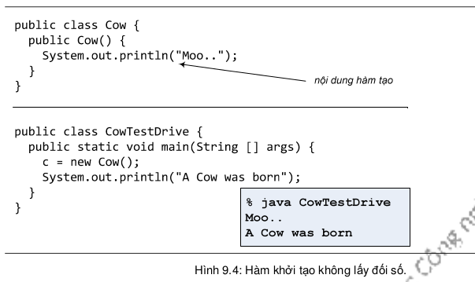
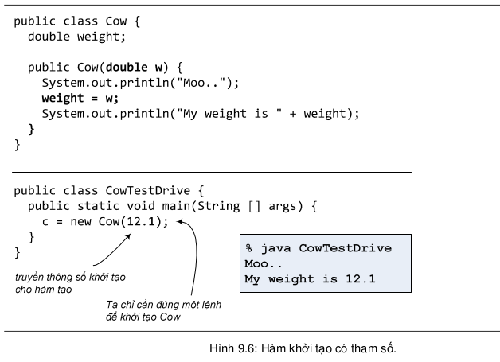
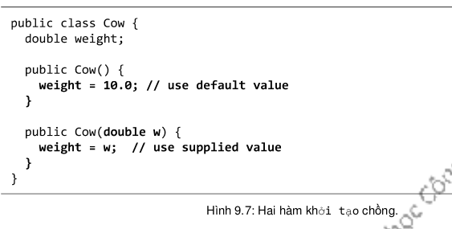

Nhớ lại rằng có ba bước khi muốn tạo mới một đối tượng: khai báo một biến tham chiếu, tạo một đối tượng, chiếu tham chiếu tới đối tượng đó. Ta đã hiểu rõ về hai bước 1 và 3. Mục này sẽ trình bày kĩ về phần còn lại: tạo một đối tượng.
Khi ta chạy lệnh new Cow(), máy ảo Java sẽ kích hoạt một hàm đặc biệt được gọi là hàm khởi tạo (constructor). Nó không phải một phương thức thông thường, nó chỉ chạy khi ta khởi tạo một đối tượng, và cách duy nhất để kích hoạt một hàm khởi tạo cho một đối tượng là dùng từ khóa new kèm theo tên lớp để tạo chính đối tượng đó. (Thực ra còn một cách khác là gọi trực tiếp từ bên trong một hàm khởi tạo khác, nhưng ta sẽ nói về cách này sau).
Trong các ví dụ trước, ta chưa hề viết hàm khởi tạo, vậy nó ở đâu ra để cho máy ảo gọi mỗi khi ta tạo đối tượng mới? Ta có thể viết hàm khởi tạo, và ta sẽ viết nhiều hàm khởi tạo. Nhưng nếu ta không viết thì trình biên dịch sẽ viết cho ta một hàm khởi tạo mặc định. Hàm khởi tạo mặc định của trình biên dịch dành cho lớp Cow có nội dung như thế này:
public Cow() {
// constructor content
}Hàm khởi tạo trông giống với một phương thức, nhưng có các đặc điểm là: không có kiểu trả về (và sẽ không trả về giá trị gì), và có tên hàm trùng với tên lớp. Hàm khởi tạo mà trình biên dịch tự tạo có nội dung rỗng, hàm khởi tạo ta tự viết sẽ có nội dung ở trong phần thân hàm.
Đặc điểm quan trọng của một hàm khởi tạo là nó chạy trước khi ta làm được bất cứ việc gì khác đối với đối tượng được tạo, chiếu một tham chiếu tới nó chẳng hạn. Nghĩa là, ta có cơ hội đưa đối tượng vào trạng thái sẵn sàng sử dụng trước khi nó bắt đầu được sử dụng. Nói cách khác, đối tượng có cơ hội tự khởi tạo trước khi bất cứ ai có thể điều khiển nó bằng một cái tham chiếu nào đó. Tại hàm khởi tạo của Cow trong ví dụ Hình 9.4, ta không làm điều gì nghiêm trọng mà chỉ in thông báo ra màn hình để thể hiện chuỗi sự kiện đã xảy ra.
Nhiều người dùng hàm khởi tạo để khởi tạo trạng thái của đối tượng, nghĩa là gán các giá trị ban đầu cho các biến thực thể của đối tượng, chẳng hạn:
public Cow() {
weight = 10.0;
}Đó là lựa chọn tốt nếu như người viết lớp Cow biết được đối tượng Cow nên có cân nặng bao nhiêu. Nhưng nếu những lập trình viên khác – người viết những đoạn mã dùng đến lớp Cow mới có thông tin này thì sao?
Từ mục 5.4, ta đã biết về giải pháp dùng các phương thức truy nhập. Cụ thể ở đây ta có thể bổ sung phương thức setWeight() để cho phép gán giá trị cho weight từ bên ngoài lớp Cow. Nhưng điều đó có nghĩa người ta sẽ cần đến 2 lệnh để hoàn thành việc khởi tạo một đối tượng Cow: một lệnh new Cow() để tạo đối tượng, một lệnh gọi setWeight() để khởi tạo weight. Và ở giữa hai lệnh đó là khoảng thời gian mà đối tượng Cow tạm thời có weight chưa được khởi tạo.
Với cách làm như vậy, ta phải tin tưởng là người dùng lớp Cow sẽ khởi tạo weight và hy vọng họ sẽ không làm gì kì cục trước khi khởi tạo weight. Trông đợi vào việc người khác sẽ làm đúng cũng tương đương với việc hy vọng điều rủi ro sẽ không xảy ra. Tốt hơn cả là ta nên tự đảm bảo sao cho những tình huống không mong muốn sẽ không xảy ra. Nếu một đối tượng không nên được sử dụng trước khi nó được khởi tạo xong thì ta đừng cho ai động đến đối tượng đó trước khi ta hoàn thành việc khởi tạo.
Cách tốt nhất để hoàn thành việc khởi tạo đối tượng trước khi ai đó có được một tham chiếu tới đối tượng là đặt tất cả những đoạn mã khởi tạo vào bên trong hàm khởi tạo. Vấn đề còn lại chỉ là viết một hàm khởi tạo nhận đối số rồi dùng đối số để truyền vào hàm khởi tạo các thông số cần thiết cho việc khởi tạo đối tượng. Kết quả là sau đúng một lời gọi hàm khởi tạo kèm đối số, đối tượng được khởi tạo xong và sẵn sàng cho sử dụng. Xem minh họa tại Hình 9.6.
Tuy nhiên, không phải lúc nào người dùng Cow cũng biết hoặc quan tâm đến trọng lượng cần khởi tạo cho đối tượng Cow mới. Ta nên cho họ lựa chọn tạo mới Cow mà không cần chỉ rõ giá trị khởi tạo cho weight. Cách giải quyết là bổ sung một hàm khởi tạo không nhận đối số và hàm này sẽ tự gán cho weight một giá trị mặc định nào đó.
Nói cách khác là ta có các hàm khởi tạo chồng nhau để phục vụ các lựa chọn khác nhau cho việc tạo mới đối tượng. Và cũng như các phương thức chồng khác, các hàm khởi tạo chồng nhau phải có danh sách tham số khác nhau.
Như với khai báo lớp Cow trong ví dụ Hình 9.7, ta viết hai hàm khởi tạo cho lớp Cow, và người dùng sẽ có hai lựa chọn để tạo một đối tượng Cow mới:
Cow c1 = new Cow(12.1);
hoặc
Cow c1 = new Cow();
Quay lại vấn đề về hàm khởi tạo không nhận đối số mà trình biên dịch cung cấp cho ta. Không phải lúc nào ta cũng có sẵn một hàm khởi tạo như vậy. Trình biên dịch chỉ cung cấp cho ta một hàm khởi tạo mặc định nếu ta không viết bất cứ một hàm khởi tạo nào cho lớp đó. Khi ta đã viết dù chỉ một hàm khởi tạo cho lớp đó, thì ta phải tự viết cả hàm khởi tạo không nhận đối số nếu cần đến nó.